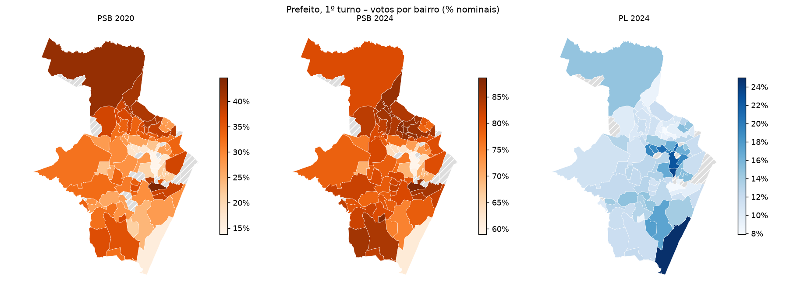
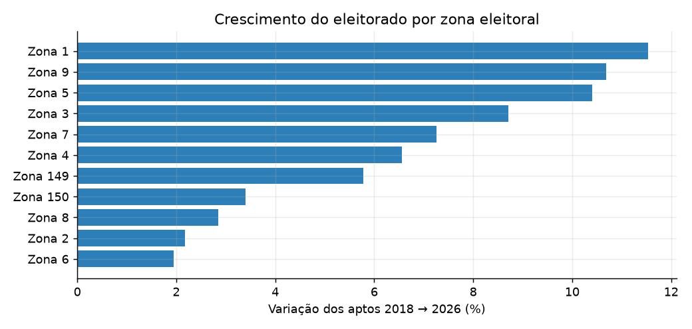
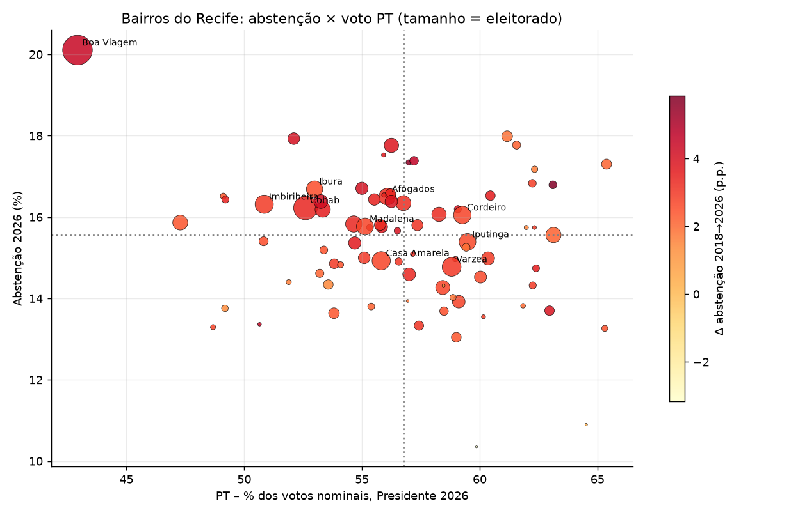

Manual Completo de Utilização, Navegação Territorial e Interpretação Estratégica de Dados
O Painel de Inteligência Eleitoral de Pernambuco foi desenvolvido para subsidiar partidos, candidatos, coordenadores de campanha e lideranças políticas com diagnósticos empíricos e análises espaciais de alta precisão. Alimentado por dados oficiais do TRE-PE e do TSE, o sistema cobre integralmente o estado de Pernambuco:
• 12 Regiões de Desenvolvimento oficiais
• 185 Municípios (100% de Pernambuco + Fernando de Noronha integrado)
• Cobertura histórica contínua de 2008 a 2026
• 209 Zonas Eleitorais individualizadas por município
• 1.058 Bairros e Distritos com limites geográficos
• 3.406 Colégios Eleitorais georreferenciados (pins)
• 22.111 Seções Eleitorais analisadas voto a voto
admin)
Quando o login é realizado pelo administrador (admin), a barra lateral exibe automaticamente o módulo "🛡️ Auditoria de Acessos". Ele permite:
1. Ver a tabela com data/hora exata (horário de Pernambuco/Brasília) de cada login efetuado.
2. Monitorar quais membros da equipe ou diretório acessaram o painel e acompanhar tentativas incorretas.
3. Baixar o arquivo completo com o botão "📥 Baixar Logs (CSV)".
A barra lateral posicionada à esquerda da tela comanda o escopo geral de dados carregado na plataforma.
| Filtro | Descrição e Comportamento |
|---|---|
| Ano da Eleição | Selecione qualquer pleito entre 2008 e 2026. O sistema filtra automaticamente os cargos e turnos válidos daquele ano. |
| Cargo em Disputa |
• Eleições Gerais: Presidente, Governador, Senador, Deputado Federal, Deputado Estadual. • Eleições Municipais: Prefeito, Vereador. |
| Turno | Disponível quando houver 2º turno no pleito e cargo selecionado (1º ou 2º Turno). |
| Foco: Candidato vs Partido |
• 👤 Candidato: Seleção individual por nome de urna ou a opção ⭐ TODOS (Mapa de Vencedores).• 🚩 Partido: Agrega todos os votos nominais da legenda somados aos votos de legenda partidária. |
Apresenta o mapa coroplético de Pernambuco dividido em suas 12 Regiões de Desenvolvimento oficiais.
Elementos da Tela: Mapa interativo com as 12 RDs, ranking de votos absolutos, percentual de válidos e Quociente Locacional (QL).
🎯 Perguntas Políticas Respondidas:
Exibe a malha completa dos 185 municípios pernambucanos com coloração temática.

Elementos da Tela: Mapa coroplético dos 185 municípios, placa de vitórias municipais por partido, Top 10 cidades em votos e percentuais, e cálculo da Margem de Vitória (vantagem do 1º sobre o 2º colocado).
🎯 Perguntas Políticas Respondidas:
Segmenta os votos pelas 209 Zonas Eleitorais da Justiça Eleitoral, com ênfase nas capitais e polos regionais.

Elementos da Tela: Mapa das zonas recortadas por cidade, com filtro específico para o Recife (11 Zonas Eleitorais) e grandes municípios, além de taxas de abstenção e comparecimento.
🎯 Perguntas Políticas Respondidas:
Mosaico territorial de máxima desagregação urbana e distrital rural.

Elementos da Tela: Polígonos de todos os 94 bairros do Recife (Boa Viagem, Casa Amarela, Madalena, Várzea, Ibura, etc.) e distritos dos 185 municípios, com barra de pesquisa textual instantânea.
🎯 Perguntas Políticas Respondidas:
O nível atômico da estratégia eleitoral: mapa de pontos georreferenciados de todas as escolas e locais de votação de Pernambuco.
Elementos da Tela: Pins de cada colégio eleitoral com nome da escola, endereço, bairro, quantidade de seções ativas, total de eleitores aptos e resultado urna a urna.
🎯 Perguntas Políticas Respondidas:
Analisa a correlação espacial entre dois atores eleitorais (Candidatos ou Partidos), mesmo em cargos e pleitos distintos.
Elementos da Tela: Gráfico de Dispersão (Scatter Plot), Coeficiente de Correlação de Pearson ($r$) e a Matriz Estratégica dos 4 Quadrantes Políticos:
| Quadrante | Classificação | Interpretação Política Estratégica |
|---|---|---|
| Q1 | Dobradinha de Ouro | Ambos os candidatos têm votação acima da média. Território de sinergia total onde a parceria funciona plenamente. |
| Q2 | Potencial de Herança | O parceiro B é muito forte, mas o candidato A ainda é fraco. Território prioritário para o parceiro B transferir votos para A. |
| Q3 | Território Neutro / Vácuo | Ambos são fracos. Exige avaliação de custo-benefício antes de gastar recursos de campanha. |
| Q4 | Base Própria de A | Fortaleza consolidada do candidato A, onde ele tem capital político suficiente para alavancar o parceiro B. |
🎯 Perguntas Políticas Respondidas:
Módulo especializado exclusivo da capital pernambucana, estruturado em três níveis integrados: 1. Consolidado Municipal, 2. As 11 Zonas Eleitorais e 3. Os 94 Bairros Oficiais.
Destaque de Engenharia Geoespacial: Fernando de Noronha é computado com fidelidade na 4ª Zona Eleitoral continental para cálculo exato de votos, mas sua geometria marítima é filtrada no mapa para não deformar o enquadramento urbano da capital.
🎯 Perguntas Políticas Respondidas:
Módulo temporal para acompanhar a trajetória histórica e evolução de votos de candidatos e partidos ao longo dos anos.
Configuração de Até 4 Pleitos Simultâneos:
Gráfico de Barras Agrupadas por Território:
Em cada unidade territorial (Zona, Município, RD ou Bairro), as barras de todos os pleitos selecionados ficam agrupadas lado a lado, permitindo comparar de relance o ganho ou perda de votos.
Alternador de 4 Métricas:
🎯 Perguntas Políticas Respondidas:
| Perfil do Usuário | Abas Mais Recomendadas | Principal Decisão Tomada |
|---|---|---|
| Prefeito / Vereador | Abas 4 (Bairros), 5 (Colégios) e 8 (Comparativo) | Direcionamento de atos de campanha de rua e priorização de colégios com grande volume de indecisos. |
| Deputado Federal / Estadual | Abas 1 (Regiões), 2 (Municípios) e 6 (Cruzamentos) | Auditoria de compromissos com prefeitos do interior e escolha do parceiro ideal para dobradinha. |
| Governador / Senador | Abas 1 (Regiões), 2 (Municípios) e 8 (Comparativo) | Estratégia majoritária de equilíbrio entre Região Metropolitana, Agreste e Sertão. |
| Coordenador / Marqueteiro | Abas 3 (Zonas), 6 (Cruzamentos) e 8 (Comparativo) | Alocação de orçamento de publicidade segmentada e definição de narrativas de discurso por região. |
| Diretório Partidário | Abas 2 (Municípios) e 8 (Comparativo) | Mapeamento de prefeituras conquistadas e retenção de votos da legenda ao longo dos pleitos. |
Votos atribuídos diretamente a um candidato individual.
Votos VálidosSoma dos votos nominais com os votos de legenda (exclui brancos e nulos).
Margem de VitóriaDiferença (em votos ou p.p.) entre o 1º e o 2º colocado no território.
Índice que mede se o candidato tem concentração de votos acima da média na região ($QL > 1,0$).
Pontos Percentuais (p.p.)Diferença aritmética simples entre duas porcentagens.
Abstenção EleitoralPorcentagem de eleitores aptos que deixaram de votar no dia da eleição.